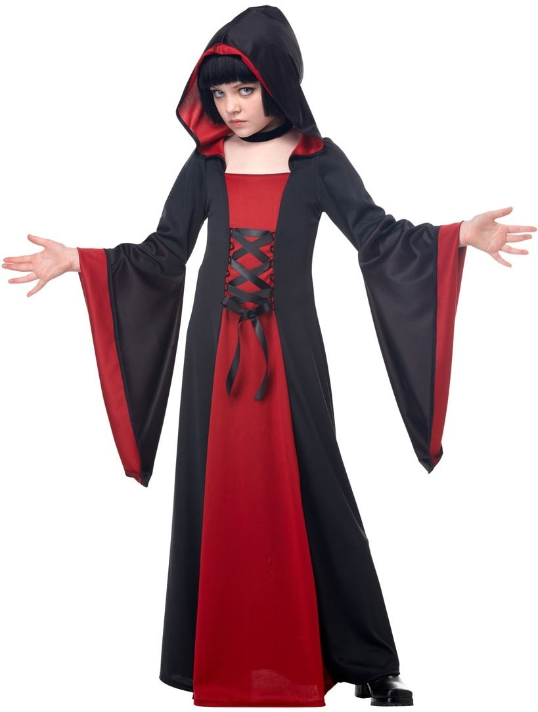

HallowenShop
Главная
SEO
Акции
Коды сайта 1
Коды сайта 2
Коды сайта 2
Коды сайта 1
Разделы
Коды сайта 1
Коды сайта 2
Коды сайта 2
Коды сайта 1
Избранное 💛
Корзина
Вход|Регистрация
🎃Популярные разделы!🎃
СЛАДОСТИ
КОСТЮМЫ
НАКЛЕЙКИ
🕷Популярные товары!🕷
Девушка Маг

1780 руб.
Бесплатная доставка!
▲